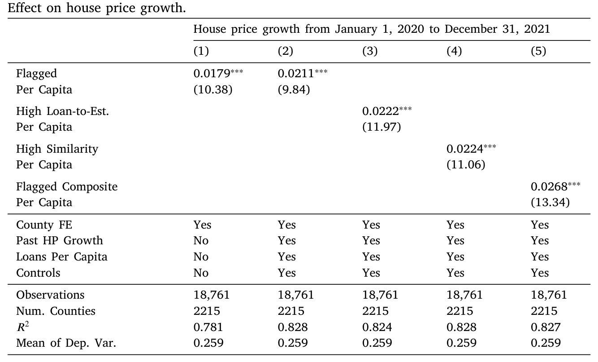
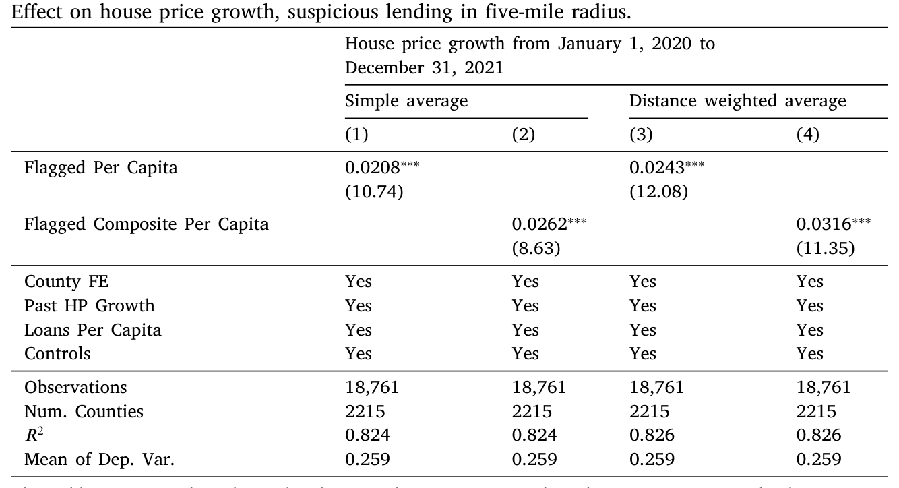
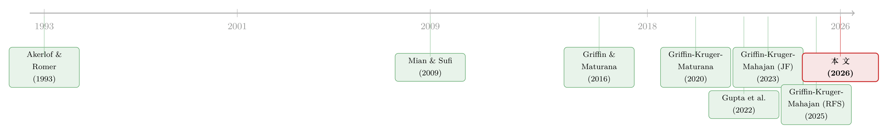

偷来的钱，会去买房——疫情救济金欺诈如何悄悄抬高了美国房价
本文读的是 Griffin, Kruger & Mahajan (2026, Journal of Financial Economics)：美国疫情期间发放的薪资保护计划（PPP）里混进了大量欺诈性贷款，而这些「天上掉下来的钱」并没有安静地躺在账户里——它们被拿去买房。作者发现，可疑放贷最密集的那一档 ZIP 区，房价比同县最低一档多涨了 5.8 个百分点，约占该时期房价总涨幅的 22.5%。一句话：欺诈的真正成本，远不止被偷走的那笔钱本身。
1 引言：欺诈的「账面损失」和它的影子
我们通常怎么理解金融欺诈的代价？最直觉的算法是——被偷走了多少钱，损失就是多少钱。一桩 PPP 贷款被冒领了 2 万美元，那么纳税人的损失就是这 2 万美元。干净利落，账目分明。
但事情真的这么简单吗？
早在 1993 年，Akerlof 和 Romer 在那篇著名的《Looting》里就提出过一个更不安的猜想：欺诈真正可怕的地方，往往不在它直接偷走的部分，而在它外溢出去的那部分——被偷的钱会流动，会被花掉，会在某个市场里堆积成需求，最终扭曲资产价格。他们用 1980 年代美国储贷危机（Savings and Loan Crisis）里商业地产的泡沫做例子：银行明知资不抵债，却通过欺诈性放贷「赌一把」，把商业地产价格一路推高，再轰然崩塌。换句话说，欺诈的成本里藏着一个影子——它落在那些从未参与欺诈、却要为虚高房价买单的普通人身上。
这是一个很漂亮的理论。问题是，它一直很难被干净地检验。原因也很简单：欺诈天生是藏起来的，你既看不清它发生在哪里，也算不出它有多大，更别说把它和别的因素分离开来，去衡量它对价格的因果影响。
于是，新冠疫情提供了一个罕见的实验场。
美国为应对疫情，先后启动了 7930 亿美元的薪资保护计划（Paycheck Protection Program, PPP）、3840 亿美元的经济伤害灾难贷款（EIDL）、以及 8720 亿美元的失业保险，总计超过 4.5 万亿美元的财政投放。而越来越多的证据表明，其中相当一部分是欺诈性的。一位前联邦检察官的话被反复引用：「从没见过这样的事……这是一代人里最大的欺诈。」
钱多、发得急、监管松，欺诈自然滋生。但对研究者而言，这场灾难恰恰具备一个理论上极其宝贵的性质：欺诈在地理上高度集中、且与正常经济活动并不对应。绝大多数救济项目的设计初衷，是按人口和收入比例去填补疫情造成的收入缺口——它们在横截面上几乎是「中性」的，跟随着人口和收入走。唯独欺诈不是。欺诈像野火，沿着某些社会网络蔓延，在一些 ZIP 区几乎为零，在另一些 ZIP 区却高达四成贷款被标记为可疑。这种不跟随基本面的区域变异，正是识别因果效应所需要的那种「外生扰动」。
本文要回答的核心问题，就建立在这个实验场之上。
2 研究问题：偷来的钱，去哪儿了？
把问题摆明白：
领到欺诈性救济金的人，会不会把这笔钱拿去买资产、尤其是买房？如果会，这些购买会不会反过来把当地房价顶上去？
为什么单单盯住房子？因为房子有两个别的商品没有的性质。第一，它不可移动——一个 ZIP 区的房子供给在短期内基本是固定的，需求一冲上来，价格几乎只能往上走。第二，它是区域性的——本地的需求冲击主要落在本地的价格上，这让「在哪里发生欺诈、在哪里看到涨价」的对应关系变得可追踪。
这里其实暗含一个相当微妙的经济学预期，值得停下来想一想。常规的救济金（非欺诈的那部分）按理说不该改变购房行为：因为它的设计就是来填补疫情造成的收入损失的，领到的人没有经历真正的财富增加，只是被「补平」了，消费模式不该变。但欺诈性的钱完全不同——它是凭空多出来的一笔横财（windfall），是一次实打实的财富与收入的跃升。更要命的是，敢去骗钱的人，本身可能就更倾向于把这笔来路不正的钱尽快花掉，而不是存起来。
所以作者的假设很清晰：非欺诈的 PPP 不影响房价，欺诈的 PPP 才是那个推手。 这个「对照」本身，后面会成为整个识别逻辑里极漂亮的一笔。
3 第一步：先看人，谁去买了房
在动用整个房地产市场的数据之前，作者先做了一件更扎实的事——直接盯住个人。
逻辑上这是对的：如果欺诈真的推高了房价，那它必须先通过「领钱的人去买房」这个微观渠道。这个渠道要是不存在，后面 ZIP 层面的房价相关性就成了空中楼阁。
他们随机抽取了 250,000 名 PPP 贷款的个人接受者，把他们匹配到 PropertyRadar 的房产所有权记录、LexisNexis 的购房数据，以及 Verisk（原 Infutor）的居住地址变迁史。然后用一个堆叠式双重差分 (stacked difference-in-differences, stacked DiD) 框架，比较「拿到被标记为可疑贷款的人」和「拿到正常贷款的人」在拿到钱前后购房概率的变化。
结果相当干净：在领到可疑贷款后的 18 个月里，一个人购房的概率上升了 17%（相对于拿正常贷款的对照组），搬家的倾向上升了 22%（相对于完全没领钱的人）。

Table 2
请注意这个对比的精妙之处。同样是领了 PPP 的钱，唯一的差别是「这笔钱是不是被标记为可疑」，而购房行为出现了系统性的分叉。这正是第 2 节那个预期的微观印证：正常救济金没有改变人们的购房行为，欺诈性救济金改变了。 微观渠道确实存在。于是，一个自然的问题接踵而至——这些被偷来的钱去买房，会不会在社区层面把价格顶起来？
4 识别策略：同一个县里，高欺诈区 vs 低欺诈区
接着，作者把镜头从个人拉到 ZIP 区。
衡量「房价」用的是 Zillow 房屋价值指数（Zillow House Value Index, ZHVI），它估计的是某地处在 35–65 百分位的「典型」房屋价值，并对季节性和成交结构变化做了调整。衡量「欺诈」则用的是 Griffin et al. (2023) 开发的、基于贷款层面的可疑 PPP 贷款指标——这套指标识别的是诸如「向未注册企业放贷」「同一住宅地址出现多笔贷款」「相对行业均值异常高的隐含薪酬」「申报就业人数与 EIDL 项目严重对不上」等等的危险信号。原始数据覆盖了从 2020 年 4 月到 2021 年 6 月、由 4809 家放贷机构发放的 11,469,801 笔贷款，总额 7930 亿美元。最终样本是 18,761 个 ZIP 区，覆盖了全美 93% 的人口。
识别的核心动作，是一行不起眼但极关键的设定：县固定效应 (county fixed effects)。
为什么是县？因为疫情期间影响房价的宏观力量太多了——利率、远程办公、人口迁徙、各州封锁政策……这些大多在更宏观的层面（州、都市区、县）上波动。把县固定效应放进去，等于是说：我只比较同一个县内部、不同 ZIP 区之间的差异。 同一个县共享同样的利率环境、同样的州政策、同样的区域经济，剩下能解释 ZIP 之间房价分化的，就更可能是那些县内部的局部因素——而欺诈，恰恰是一个在县内部都能剧烈变化的变量（Griffin et al. 2025 发现，即便在同一个县内，相邻 ZIP 区的欺诈率也可能天差地别，因为它沿社会网络扩散，形成一个个「欺诈口袋」）。
基准回归的结果是本文的招牌数字：
处在可疑放贷人均额最高一档（top decile）的 ZIP 区，2020–2021 年间房价涨幅，比同县最低一档（lowest decile）的 ZIP 区多出 5.8 个百分点。而这两年全样本的平均房价涨幅是 25.9 个百分点——也就是说，欺诈一项就解释了其中约 22.5%。

Table 3
时间上的形态同样耐人寻味。这个效应最早在 2020 年 4 月变得显著（正是 PPP 开闸放水的时点），一路持续到 2022 年 6 月；而过了 2022 年 6 月之后，高欺诈区的房价增长反而开始落后，出现了约相当于初始效应 35% 的反转 (reversal)。这个「先涨后跌」的轨迹，与「需求冲击是暂时的」这一故事高度吻合：欺诈的钱涌进来时把价格顶高，钱断流后，被高价吓退的边际买家减少，价格回落。
而那个我们一直惦记着的对照——非欺诈的 PPP 放贷，对房价没有影响。这与「正常救济金只是填补了合法开支和收入损失、并未提供额外刺激」的解释完全一致。一正一负，对照鲜明。
5 真正关键的一步：欺诈是随机分配的吗？
到这里，一个挑剔的读者一定会皱眉：等一下，欺诈并不是随机撒到各个 ZIP 区的。 万一那些高欺诈的 ZIP 区，本来就有房价上涨的动能（Guren, 2018 讲的房价动量）？万一它们身上带着某些我们没观测到、却又恰好和疫情期间房价上涨相关的特征？那么 5.8 个百分点里，有多少是欺诈真的「推」上去的，有多少只是相关而非因果？
这是全文最要害的地方。作者一口气用了五种策略来逼问这个问题，我挑最关键的两种讲。
其一，合成控制 (synthetic control)。 作者为高欺诈区构造一个「合成对照组」，使其在 2018、2019 年的房价走势与高欺诈区几乎完全重合。关键在于：这种重合一直保持到 2020 年的头几个月，然后仅仅在 2020 年夏天开始分叉——而那个时点，恰恰正是欺诈最可能开始影响房价的时点。两条线在欺诈来临之前严丝合缝、之后才分开，这本身就是一个有力的「平行趋势」证据。
其二，工具变量 (instrumental variable, IV)。 这一步借力于 Griffin et al. (2025) 的一个发现：欺诈是沿社会网络「传染」的。于是作者用一个 ZIP 区与远方（最远到 500 英里之外）地区在欺诈上的社会连接，作为本地欺诈的工具变量。直觉是：你和五百英里外某地的社交联系，决定了「关于怎么骗 PPP 的信息」会不会传到你这里，却很难通过别的渠道直接影响你本地的房价——这就是排他性约束（exclusion restriction）的论证。距离拉到 500 英里，正是为了把人口迁徙、本地遗漏变量、区域共同冲击这些干扰尽量甩开。IV 估计出来的效应，与基准估计一致，甚至略大。
作者还做了一个更狠的精炼：只看 2021 年的房价增长，用「该 ZIP 区与 2020 年可疑放贷的社会连接」去工具化它 2021 年的欺诈率，同时控制住该区自己 2020 年的欺诈率和 2020 年的房价增长。这等于把因果方向钉死——驱动欺诈变异的，全是发生在结果之前的事件。结果是基准 IV 效应的 83%，说明效应主要落在欺诈最猖獗的 2021 年。
此外还有三招收尾：按收入、贫困率、人口密度、少数族裔占比、教育、疫情前失业率等人口特征做交互，效应在各组都很相似；但在住房供给弹性更低的地区，效应要强出 30% 以上——这完全符合「需求冲击被本地供给约束放大」的逻辑。最后，沿 Oster (2019) 的思路检验：加不加那一大堆控制变量，欺诈对房价的系数都差不多，说明遗漏变量偏误的空间有限。
留意这套组合拳的内在一致性：合成控制管「事前趋势」，远距离 IV 管「反向因果和遗漏变量」，弹性异质性管「机制是否合理」，Oster 边界管「未观测选择」。没有任何单独一招是无懈可击的，但它们指向同一个方向时，结论就很难被一个简单的故事推翻。
6 赛马：在所有解释里，欺诈站在哪一格？
就算欺诈确实推高了房价，还有一个绕不过去的问题：疫情期间想解释房价上涨的理论太多了。 远程办公把人推向郊区（Gupta et al., 2022 的「甜甜圈效应」）、可远程办公的岗位比例（Dingel and Neiman, 2020）、人口外迁、土地稀缺、经济刺激支票……每一个都言之成理。欺诈到底是其中举足轻重的一个，还是一个无关紧要的零头？
于是真正的「反转」出现在这里：作者把所有候选解释拉到同一个赛道上赛跑。他们沿用 Griffin et al. (2020) 那套方法论，在县内、ZIP 层面，用贝叶斯模型平均 (Bayesian Model Averaging, BMA) 和基于贝叶斯信息准则（BIC）的变量选择，让这些精心构造的代理变量同台竞争。
结论很有冲击力：PPP 欺诈始终是房价增长最强的预测因子之一，与「土地不可得 (land unavailability)」并列前茅。 远程办公水平、可远程办公性、2020–2021 年的人口迁徙、疫情前的房价增长这些因素也会被选进模型，但在多元回归里，它们的经济量级要小得多。换句话说，当你把所有解释放在一起，欺诈不仅没有被「洗掉」，反而是最稳健、最显眼的几个力量之一。
这是本文最重要的贡献之一：它不是又提出了一个新的房价解释变量，而是把一个此前文献里完全没人考虑过的渠道，放进了一个公平的擂台，并证明它配得上前排的位置。
7 不止是房子：汽车、消费与通胀
如果欺诈的钱真的在「花」，那它不该只在房子上留下痕迹。作者顺势把证据链拉长，去看别的市场。
- 汽车：用六个大州 ZIP × 月度的汽车牌照登记数据，欺诈每高一个标准差，2020 年 3 月到 2021 年 12 月的汽车上牌量显著上升
2.38%。 - 消费：用 Mastercard 普查区 × 年度的人均消费数据，欺诈每高一个标准差，2020–2021 年人均消费的百分位排名相对 2019 年上升
0.595，而到 2022 年就回归正常。 - 人流：用普查区 × 周的出行数据，高欺诈区对汽车经销商、杂货店、家具店、餐厅、金融机构的到访都更多。
- 通胀：用 BLS 的区域 CPI（仅覆盖
23个 CBSA），高欺诈的都市区从 2021 年底起出现了更高的通胀，一直持续到 2023 年 4 月。
这些证据合起来，勾勒出一个完整且自洽的图景：偷来的钱被迅速花掉 → 推高了本地房价、车价乃至一般物价 → 钱断流后，这些效应在 2022 年陆续回落。欺诈的「影子」，落在了每一个买房、买车、过日子的本地居民头上。
8 文献脉络
把这篇论文放回它的谱系里看，会更明白它的分量。
故事的源头是 Akerlof & Romer (1993) 关于「欺诈的外部性大于直接损失」的猜想。这条线后来在房地产泡沫研究里被反复验证：Mian & Sufi (2009) 揭示了次贷信贷扩张如何放大违约与房价；Griffin & Maturana (2016) 证明可疑的按揭发放行为确实扭曲了房价；到 Griffin, Kruger & Maturana (2020)，作者们用一个统一框架给 2003–2006 年那轮房价繁荣与崩溃做了「赛马」，发现按揭欺诈与次贷信贷是最大的推手。

接着是本文作者自己搭起来的「疫情欺诈三部曲」：Griffin, Kruger & Mahajan (2023, Journal of Finance) 先证明 PPP 欺诈广泛存在、且部分由放贷宽松的 FinTech 机构助推；Griffin, Kruger & Mahajan (2025, Review of Financial Studies) 再证明欺诈像传染病一样沿社会网络扩散，形成县内都参差不齐的「欺诈口袋」——这正是本文 IV 的弹药库。而本文 (2026) 是这条线的收口：它不再问欺诈从哪来、怎么传，而是问欺诈造成了什么后果，并第一次把「政府项目欺诈的经济外溢」这件事，量化地落在了房价、消费与通胀上。
同时，本文也接上了另外两条支流：一条是解释疫情房价的文献（Gupta et al., 2022 的甜甜圈效应等），它在这条线里补了一个被忽略的强变量；另一条是关于财政刺激与边际消费倾向（MPC）的庞大文献，它贡献了一个全新的异质性来源——欺诈受益者的消费反应，这是 MPC 文献此前从未触及的人群。
关于「金融犯罪的外部性」这个母题，本博客此前读过一篇风格相近的论文，是从另一个方向切入的——教育能否在源头上减少金融犯罪（参见《一门高中理财课，能让金融犯罪少三成？》）。一边是「犯罪如何外溢成本」，一边是「如何从源头抑制犯罪」，恰好构成一枚硬币的两面。
评论与延伸（Q&A + 研究方向）
(a) 几个可能的疑问
Q：为什么不直接用欺诈金额，而要绕这么大圈用「社会连接」做工具变量？
因为欺诈额本身极可能内生。高欺诈的 ZIP 区也许本来就房价动能强、或带着某些和疫情期间涨价相关的隐性特征，这会让 OLS 系数既含因果又含混淆。远距离（500 英里外）的社会连接提供了一个更「外生」的扰动：它决定了「怎么骗」的信息能不能传到本地，却很难通过别的渠道直接影响本地房价。IV 结果与基准一致甚至略大，反而说明 OLS 没有夸大效应。
Q：5.8 个百分点听起来不小，但它是「同县内最高 vs 最低一档」的对比，会不会被极端 ZIP 区拉大？
这正是县固定效应要解决的事——它只比较同县内部的差异，已经剥掉了县级的共同冲击。而且作者按收入、密度、族裔、教育等做了大量横截面切分，效应在各组都相似，并非由某一小撮 ZIP 区驱动；时间上的「先显著、后反转」形态也不像极端值能伪造出来的。
Q：欺诈的钱和正常救济金都是政府发的，凭什么说只有前者推高了房价？
这是本文设计里最漂亮的对照。理论预期是：正常救济金只是填补疫情造成的收入损失，领钱的人没有真实的财富增加，消费不该变；而欺诈是凭空多出的横财。实证上，非欺诈 PPP 对房价没有影响，欺诈 PPP 才有——一正一负，恰好印证了这个机制，而不是「政府发钱就涨价」的笼统说法。
Q：房价后来反转了 35%，是不是说明这事「最终没什么影响」？
不能这么读。反转说明这是一次暂时性需求冲击：钱涌入时顶高价格，钱断流后被高价吓退的边际买家减少、价格回落，这正是供需逻辑的预期。但在 2020–2022 这段窗口里，真实地买在高点的人、付了更高首付与月供的人，承担的成本是实打实的——外部性并不因为价格回落而被抹平。
Q：欺诈指标本身会不会有大量误判，把正常贷款错标成可疑？
这套指标来自 Griffin et al. (2023)，经过了相当严格的验证：四个次级欺诈指标、三个独立的外部指标交叉印证，还得到了一份针对同一批 FinTech 放贷机构的国会调查的支持。更重要的是，测量误差若是随机的，通常会让效应衰减而非夸大——而作者估到的是显著的正效应。
Q：本文能不能用来估计欺诈受益者的边际消费倾向（MPC）？
作者很诚实地说不适合。他们的消费数据有限，尤其在个人层面较粗；而且基于 PPP 的欺诈度量很可能低估了总欺诈（因为欺诈在 EIDL、失业保险等多个项目间高度相关）。本文的定位是「欺诈外溢到价格」，消费反应只是这个外溢的必要前提，而非要精确测量的对象。
(b) 几个可能的研究问题与提案
1. 欺诈外溢到信用市场与公司债定价
【经济故事】本文讲的是欺诈的钱流向了房产、汽车这些消费品。但一笔横财同样可能流向金融资产。如果高欺诈地区的居民、小企业把钱投入本地银行存款、或推高了本地金融机构的资产负债表，是否会通过本地银行的放贷行为，间接影响到当地企业的融资成本与信用利差？
【可行性】中。需要把 ZIP/县级欺诈度量，匹配到本地银行的存贷数据（Call Reports）与小企业信贷数据，识别上可沿用本文的远距离社会连接 IV。难点在于把「本地」信用市场和全国性资本市场切开——公司债大多是全国定价的，因此更可行的落点是地方银行信贷而非公开市场公司债。
2. 欺诈、横财与本地资产的流动性
【经济故事】本文已经显示高欺诈区房子「卖得更快、更多高于挂牌价成交、看房人更多、库存更低」。这其实是一个关于流动性的故事：需求冲击不仅抬价，还压缩了买卖摩擦。一个自然延伸是：同样的横财冲击，会不会在更标准化、可交易的本地资产（比如二手车、甚至本地上市的小盘股持有）上留下流动性指纹？
【可行性】中到高。房地产侧的挂牌—成交速度数据（Redfin、Realtor.com）本文已用；难的是找到资产层面、能按地理切分的流动性指标。二手车交易数据（如本文的牌照登记）配合挂牌平台数据是较 doable 的方向。
3. 外资 / 非本地买家是放大器还是缓冲器？
【经济故事】文献里早有「外来需求推高本地房价」的证据（如 Badarinza & Ramadorai, 2018 对伦敦的研究，Favilukis et al., 2012 的国际资本流动模型）。一个有意思的交互问题是：在那些本来就有大量非本地买家的市场里，本地欺诈的需求冲击是被外来流动性吸收掉了，还是和外来需求叠加、把价格顶得更高？
【可行性】中。需要购房者的居住地来源数据（本文用的 Verisk 地址变迁史可部分支持），把「本地欺诈需求」与「外来需求」分离。识别上仍可借本文的供给弹性异质性框架——预期在外来需求活跃且供给缺乏弹性的市场里，叠加效应最强。
4. 欺诈的「反转」窗口里，谁是接盘者？
【经济故事】本文发现 2022 年后高欺诈区房价反转约
35%。那么在价格高点买入的，是本地居民、投机者，还是被房价动量吸引来的外地买家？反转的损失最终落在谁身上，直接关系到这场外部性的分配后果。【可行性】中。需要把成交记录里的买方身份（自住 vs 投资、本地 vs 外地）与价格时点匹配，PropertyRadar 与 LexisNexis 数据有此潜力。难点是界定「买在高点」的因果归因，可用事件时间窗口加 ZIP 固定效应来近似。
参考文献
- Akerlof, G.A., Romer, P.M. (1993). Looting: The economic underworld of bankruptcy for profit. Brookings Papers on Economic Activity 1993, 1–73.
- Autor, D., et al. (2022). The $800 billion Paycheck Protection Program: Where did the money go and why did it go there? Journal of Economic Perspectives 36(2), 55–80.
- Badarinza, C., Ramadorai, T. (2018). Home away from home? Foreign demand and London house prices. Journal of Financial Economics 130(3), 532–555.
- Dingel, J.I., Neiman, B. (2020). How many jobs can be done at home? Journal of Public Economics 189.
- Favilukis, J., Kohn, D., Ludvigson, S.C., Van Nieuwerburgh, S. (2012). International Capital Flows and House Prices: Theory and Evidence. NBER, 235–299.
- Gee, J., Button, M. (2019). The Financial Cost of Fraud 2019. Crowe UK.
- Granja, J., Makridis, C., Yannelis, C., Zwick, E. (2022). Did the paycheck protection program hit the target? Journal of Financial Economics 145(3), 725–761.
- Griffin, J.M., Kruger, S., Mahajan, P. (2023). Did FinTech lenders facilitate PPP fraud? Journal of Finance 78, 1777–1827.
- Griffin, J.M., Kruger, S., Mahajan, P. (2025). Is fraud contagious? Social connections and the looting of COVID relief programs. Review of Financial Studies, forthcoming.
- Griffin, J.M., Kruger, S., Maturana, G. (2020). What drove the 2003–2006 house price boom and subsequent collapse? Disentangling competing explanations. Journal of Financial Economics 141, 1007–1035.
- Griffin, J.M., Maturana, G. (2016). Did dubious mortgage origination practices distort house prices? Review of Financial Studies 29, 1671–1708.
- Gupta, A., Mittal, V., Peeters, J., Van Nieuwerburgh, S. (2022). Flattening the curve: Pandemic-induced revaluation of urban real estate. Journal of Financial Economics 146(2), 594–636.
- Guren, A.M. (2018). House price momentum and strategic complementarity. Journal of Political Economy 126(3), 1172–1218.
- Kaplan, G., Violante, G.L. (2022). The marginal propensity to consume in heterogeneous agent models. Annual Review of Economics 14, 747–775.
- Mian, A., Sufi, A. (2009). The consequences of mortgage credit expansion: Evidence from the U.S. mortgage default crisis. Quarterly Journal of Economics 124, 1449–1496.
- Oster, E. (2019). Unobservable selection and coefficient stability: Theory and evidence. Journal of Business & Economic Statistics 37(2), 187–204.
- Parker, J.A., Souleles, N.S., Johnson, D.S., McClelland, R. (2013). Consumer spending and the economic stimulus payments of 2008. American Economic Review 103(6), 2530–2553.